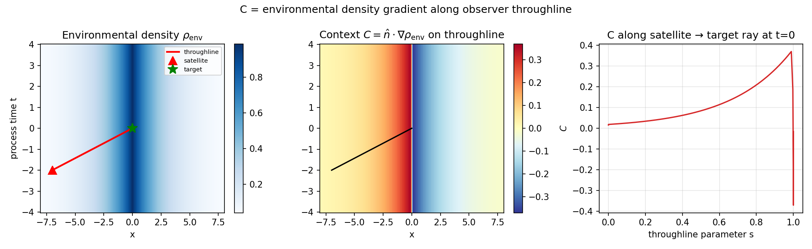
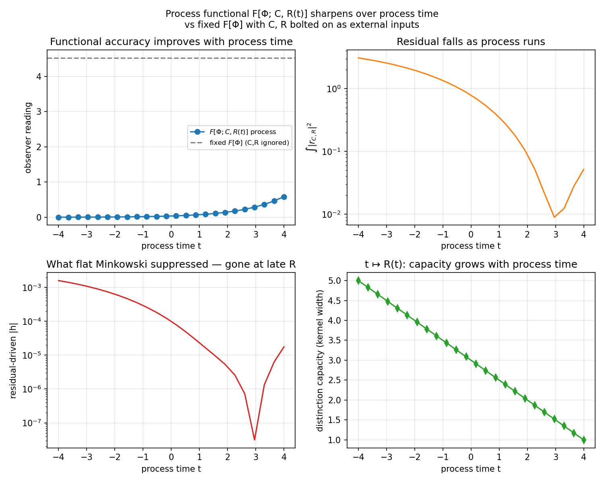
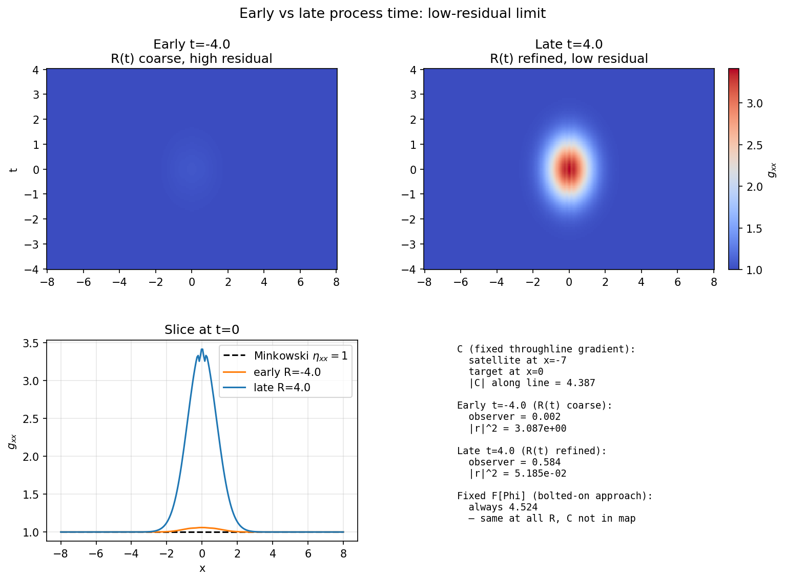
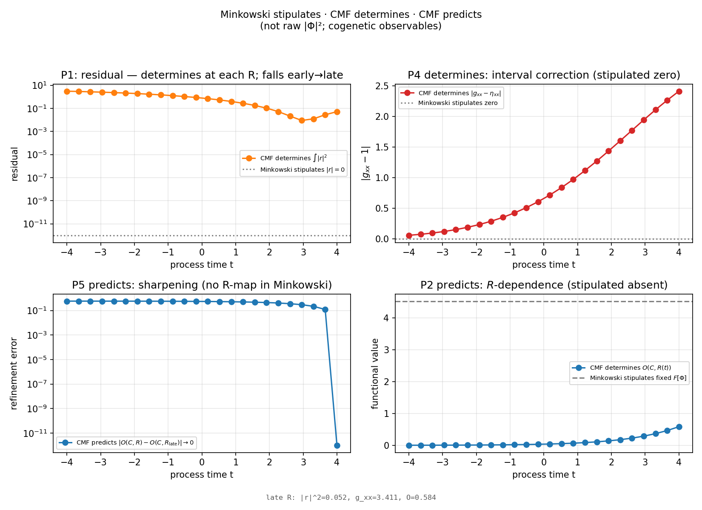

Morgan Petrik · Militant.AI · 23 June 2026 · Version 1.0.0
cmf.pdf (source)
· doi:10.5281/zenodo.20808466
· CC BY 4.0
Regenerate figures: python demo.py
Related: Cogenesis · One-Metric Quantum Gravity



